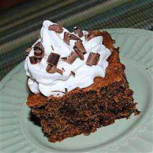

Heavenly Cake

Description
An incredibly rich chocolate cake that needs no frosting.
Ingredients
- 1 (18.25 ounce) package yellow cake mix
- 1 (3.5 ounce) package instant vanilla pudding mix
- 4 eggs
- 8 ounces sour cream
- 8 (1 ounce) squares German sweet chocolate, grated
- 1 cup semisweet chocolate chips
Steps
-
Preheat oven to 350 degrees F (175 degrees C). Lightly grease and flour
one 9x13 inch cake pan.
- Mix all ingredients and pour into prepared pan.
- Bake at 350 degrees F (175 degrees C) for 55 minutes.